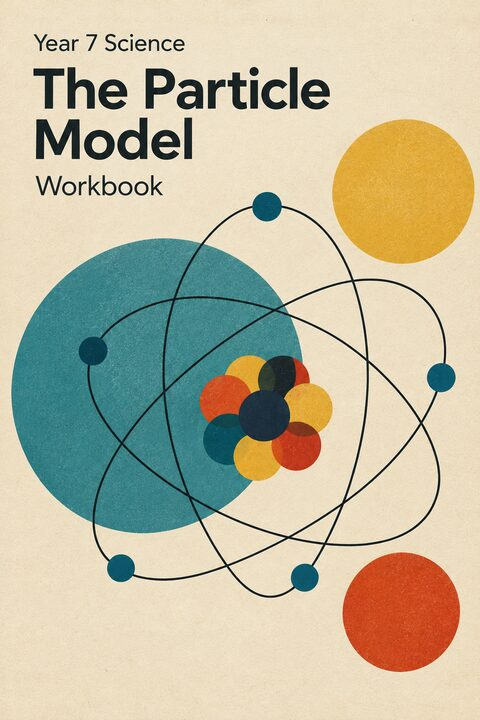

Year 7 Science · The Particle Model · Week 2 · Lesson 6 of 15
The Limits of the Model
Common wrong ideas, fixing a particle explanation, checking a particle diagram, and what the model can’t show.
Press → to begin.

Review · spaced retrieval
Quick review
Five questions from earlier lessons — mostly from last lesson. Answer them on your own first.
Lesson 6 · Overview
What we’re learning today
- the most common wrong ideas about particles
- how to fix a particle explanation
- how to check a particle diagram
- what the particle model can’t show
- spot a wrong idea about particles and correct it
- rewrite an explanation so it is correct
- use the three rules to check a particle diagram
- give a limitation of a model
True or false: when ice melts, its particles melt.
Lesson 6 · Starter
You do Key vocabulary
Copy each definition into the Key vocabulary table at the start of Lesson 6 in your booklet. The first one is done for you.
| Word | Say it | Meaning |
|---|---|---|
| Misconception | mis-kon-SEP-shun | An idea that many people believe but that is not correct. |
| Limitation | lim-ih-TAY-shun | Something a model can’t show, or shows in a way that is not accurate. |
| Scale | skayl | How the size of a drawing or model compares with the size of the real thing. |
| Substance | SUB-stance | A particular kind of matter, such as water, salt or copper. |
| Property | PROP-er-tee | Something you can observe or measure about a material. |
| Accurate | AK-yoo-rut | Correct; matching the real thing. |
Part A · Reading and comprehension
What the Model Does Not Say
Is a single particle of copper orange? Is a single particle of water wet? Decide, then read to find out.
Read What the Model Does Not Say in your booklet. Then answer questions C1–C8.
What is between the particles of a substance? Why can it not be air?
Part B · Theory
Common wrong ideas
| Wrong idea | What the particle model really says |
|---|---|
| Particles melt, freeze or boil. | Particles stay the same. Their arrangement and movement change. |
| Particles get bigger when heated. | Particles stay the same size. They move further apart. |
| There is air between particles. | There is empty space — nothing at all. |
| Particles in a solid are not moving. | They vibrate all the time, even in the coldest solid. |
| One particle has a colour or a temperature. | Colour and temperature belong to huge numbers of particles together. |
| Liquid particles are spread out. | Liquid particles are close together, almost as close as in a solid. |
Part B · Theory
I do Fixing a particle explanation
A student writes: “Butter melts in the sun because its particles melt.” Find the mistake and write a correct explanation.
- 1 Mistake: particles don’t melt. They stay the same.
- ✓ Correct: the sun heats the butter, so its particles gain energy and vibrate faster. They break free of their fixed places and slide past each other, so the butter becomes a liquid.
Part B · Work through together
We do The growing balloon
A student writes: “A balloon gets bigger in the sun because the air particles inside it expand.” Find the mistake and write a correct explanation.
Write your working in the We do 6.1 box in your booklet.
- a Mistake: particles don’t expand — they stay the same size.
- b Correct: the sun heats the air, so its particles gain kinetic energy and move faster. They hit the inside of the balloon harder and more often and spread further apart, so the balloon gets bigger.
Part B · Theory
Checking a particle diagram
- The particles of one substance are the same size in every state.
- Solid and liquid particles are touching; only the solid has a regular pattern.
- Gas particles are far apart and spread through the whole container.
Which rule does a diagram break if its gas particles are drawn bigger than its solid particles?
Part B · Theory
I do Is this liquid water?
This diagram is meant to show liquid water. What is wrong with it?
- 1 Mistake: the particles are spread out with big gaps, like a gas.
- ✓ Fix: liquid particles should be close together and touching, with no regular pattern.
Part B · Work through together
We do Solid and gas
This pair of diagrams is meant to show the same substance as a solid and as a gas. What is wrong with them?
Write your working in the We do 6.2 box in your booklet.
- 1 The gas particles are drawn much bigger than the solid particles.
- ✓ It is the same substance, so its particles must be the same size in every state (rule 1). Only their spacing and movement change.
Part B · Theory
I do What the model can’t show
Give one limitation of drawing particles as coloured circles on a flat page.
- 1 Real particles are not coloured, and they are arranged in three dimensions, not flat.
- ✓ A drawing also can’t show that the particles are moving all the time.
Part B · Work through together
We do Marbles in a tray
A teacher uses marbles in a tray to model a solid, a liquid and a gas. Give one way the marbles are a good model of particles, and one limitation.
Write your working in the We do 6.3 box in your booklet.
- a Good model: the marbles are all the same size and can be packed in rows, rolled past each other, or shaken apart — like the three states.
- b Limitation: marbles are huge and coloured, they don’t attract each other, there is air between them, and they stop moving when the tray stops.
Part C · Practice
You do Practice in your booklet
- Task 6.1 — true or false?
- Tasks 6.2–6.3 — rewrite the explanations
- Task 6.4 — find the mistake in each diagram
- Tasks 6.5–6.6 — a strength and a limitation
- Task 6.7 — why one particle isn’t wet
- Say what is wrong and what is really happening
- Particles never melt, freeze, expand or change colour
- Check every diagram against the three rules
Part D · Above level
We do Going further — judging models
These go beyond the Year 7 standard. Think about scale, and about why models are drawn the way they are.
In a desk-sized model of the solar system, the Sun is a ball 10 cm across. The Earth is about 109 times smaller across than the Sun. How big would the model Earth be?
\(10 \div 109 \approx 0.09\) cm, which is about 0.9 mm.
About 1 mm — smaller than a grain of salt. Models often stretch the scale so we can see the parts, which is a limitation.
A diagram colours one kind of particle blue and another red. Real particles have no colour. Why is the colour still useful?
Colour lets you tell the two substances apart at a glance.
It makes the model clearer, even though it isn’t accurate — a deliberate trade-off. It is fine as long as we know it is a limitation.
Lesson 6 · Recap
What we covered
- Particles never melt, freeze, boil, expand or change colour — their arrangement and movement change
- Between particles there is empty space, not air
- Three rules: same size in every state; solids and liquids touching; gases far apart
- Every model has limitations — knowing them is part of using it well
Spot the mistake: “When water boils, the water particles get bigger and turn into gas particles.”